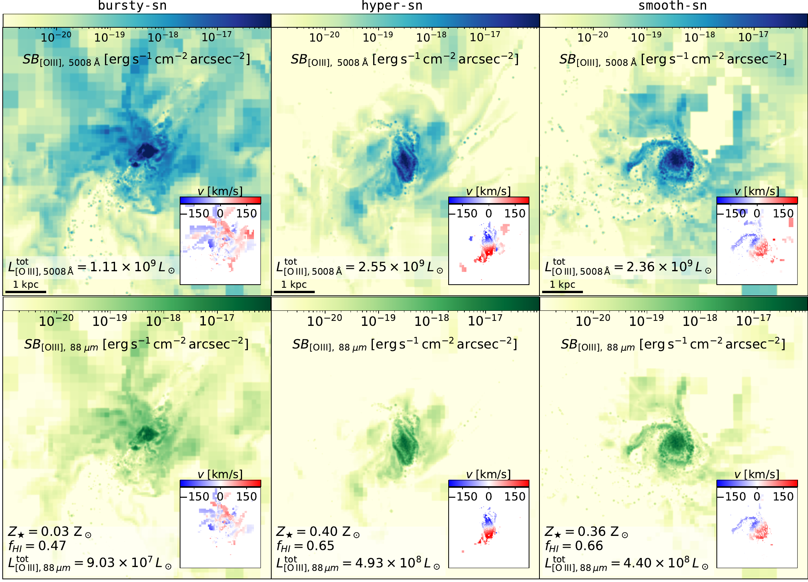
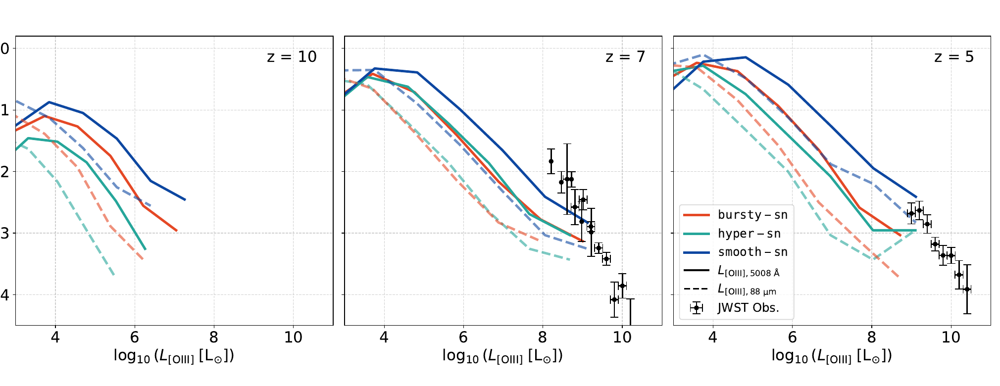
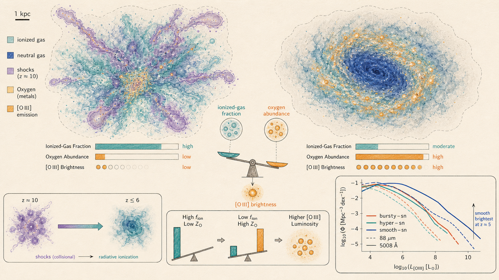

Estimate the O++ abundance in every gas cell
Oxygen is divided among four ionisation states using photoionisation, collisional ionisation, and recombination rates. The total oxygen abundance is tied to each cell’s simulated metallicity.
Research project 04 · Metal-line emission
The paper models three oxygen transitions cell by cell, connecting optical and far-infrared emission to gas phase, enrichment, ionisation, morphology, and the timing of stellar feedback.

UV-bright galaxy counts can converge after dust attenuation even when the underlying gas has very different temperatures, ionisation states, metallicities, and spatial structure.
[O III] offers a complementary test because its emissivity depends on the abundance of O++, the local electron density and temperature, and the radiation field. The optical 5008 Å line is accessible to JWST, while the 88 μm fine-structure transition is observable with ALMA. Comparing the two connects the same ion to different excitation regimes.
The analysis moves from the thermodynamic origin of the emission to population statistics and resolved structure: gas-phase contributions, mass–metallicity relations, luminosity functions, neutral fractions, half-light radii, and luminosity-weighted kinematics.
Oxygen is divided among four ionisation states using photoionisation, collisional ionisation, and recombination rates. The total oxygen abundance is tied to each cell’s simulated metallicity.
A five-level atom calculation solves the statistical-equilibrium populations of O++. Unresolved H II regions receive a Strömgren-volume correction before emissivities for 5008 Å, 4960 Å, and 88 μm are summed over the galaxy.
One hundred rays are cast isotropically from each stellar particle to the virial radius. Their optical depths provide a solid-angle-weighted attenuation factor rather than a single foreground screen.

The columns move from z = 10 to 7 and 5. All luminosity functions grow toward later times as more massive, enriched systems assemble.
Solid lines show optical 5008 Å emission; dashed lines show the 88 μm transition. Both respond to the evolving O++ reservoir.
Current JWST points overlap all models at the bright end. The wider separation at fainter luminosities motivates deeper, less overdensity-biased surveys.
At z = 10, shocked gas supplies up to about 90% of optical [O III] in Bursty-SN and Hyper-SN. By z = 7 and 5, warm dense gas photoionised by stellar radiation dominates all models.
By z = 5, Smooth-SN reaches stellar masses about one dex and metallicities about 0.5 dex above Bursty-SN. A mass–metallicity relation is present, but its scatter prevents a clean feedback classification by itself.
Differences among models reach roughly one dex, with Smooth-SN consistently producing more luminous emitters. Unlike the dust-attenuated UVLF, the [O III] curves remain separated.
At z = 5, roughly 80% of Smooth-SN and Hyper-SN galaxies have neutral fractions above 0.75, while Bursty-SN systems are more ionised. Smooth-SN is nevertheless brighter because it is more metal-rich.
Bursty-SN tends to make the most extended [O III] haloes, with size increasing with luminosity. Smooth-SN produces more compact systems, but model differences generally remain within the scatter.
The luminosity-weighted V/σ distributions are comparable across models and consistent with current ALMA and JWST constraints. The paper finds no statistically significant separation from this statistic alone.
The abundance of faint and intermediate [O III] emitters is more feedback-sensitive than the currently sampled bright end. This is the primary population-level discriminator identified in the paper.
Repeated bursty episodes create asymmetric, filamentary emission extending into the circumgalactic medium. Resolved size–luminosity trends add information beyond integrated flux.
Measuring the 5008 Å and 88 μm transitions for the same systems tests the ionised gas under different excitation conditions and links JWST to ALMA samples.
[O III]/Hβ and [O III]/[C II] can constrain ionisation parameter, metallicity, and the ionised-to-neutral balance. The paper positions multi-line analysis as the next step beyond any single luminosity function.
[O III] brightness depends on both the amount of ionised gas and the oxygen available to radiate. By z ≈ 5, bursty feedback efficiently ionises the gas but builds and retains fewer metals; smoother feedback leaves a larger neutral fraction yet produces more massive, oxygen-rich systems.
That competition explains why the smooth model consistently supplies the most [O III]-bright galaxies and why the line luminosity functions remain separated by up to about a dex even when dust-attenuated UV luminosity functions overlap. The emitting phase also evolves: shocks contribute strongly in the bursty and hypernova models at z ≈ 10, whereas radiative ionisation dominates across the models by z = 7–5.
